Shoutouts
Happy birthday to “The Fisherwoman”! You’ve accomplished quite a few things this year including expanding your fishing business, the new job, multiple fishing charters, catching a halibut, and well … I’m still waiting to send you that particular meme but I think you damn well know what I’m talking about here. You’re one of my closest friends and I really appreciate ya!
Happy birthday to “The Writer”! You’re a really nice guy and I always appreciate your kindness and compassion towards everyone. Looking forward to seeing more adventures from the land of Syurga and talking about One Piece! 🐒
Happy birthday “Aquaman!” You’re always such a force of positive energy at Spikeball and I’m quite impressed by your tenacity and eagerness to teach new people the game!
Happy birthday to “The Boxer”. You’re a really fun guy and I quite enjoyed that time we played some pickup soccer and you taught me some of the basics of how to kick a ball!
Poll Results
The results for the poll are in! Thanks to everyone for taking the time to fill it out. The overall answers are as follows. The sample size here is 19
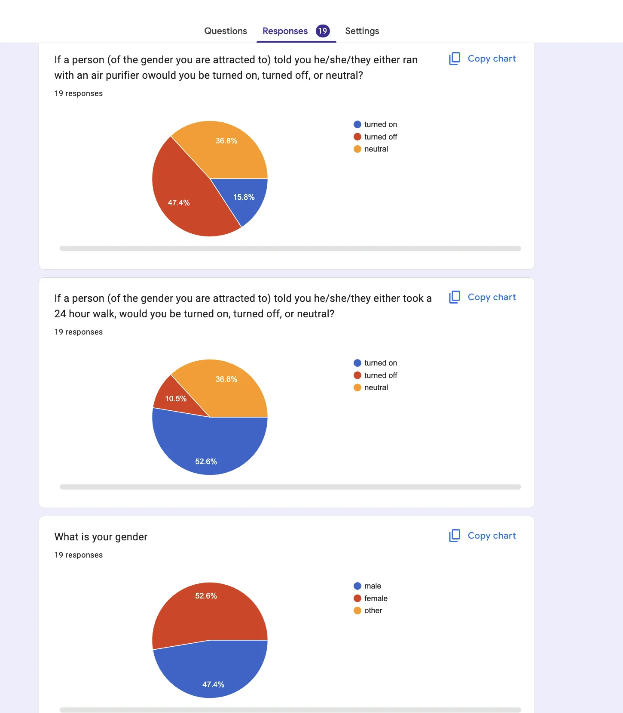
And here is a per gender breakdown
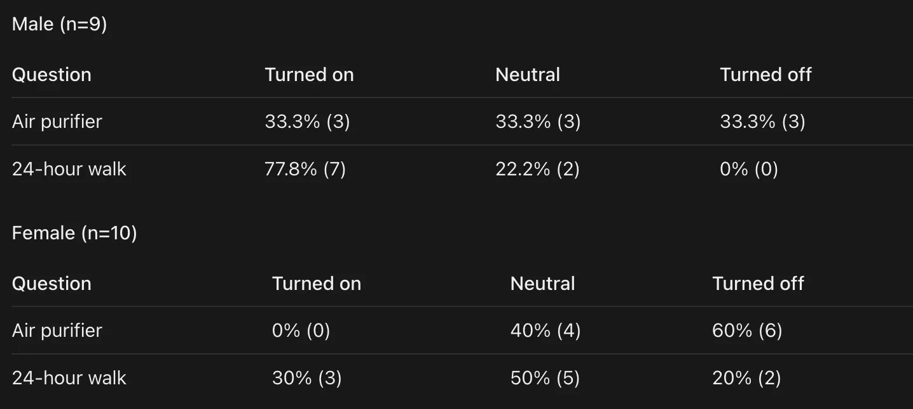
I got some interesting feedback that perhaps a 1-5 scale instead of binary could have been useful. If I ever want to do another poll I’ll consider that!
The broad takeaways here seems to be that both of the bits are more guy coded than girl coded and across genders the 24 hour walk is definitely more popular than the airpurifier run.
Monday
Once I finished helping the most disadvantaged societal class (datacenters), I went to Mission Run Club with “Let me give you a call on the world’s smallest phone,” “Hell Yeah,” and “Spaced out”. The run itself was pretty straightforward, but “Spaced out” and her boyfriend were impressed I did it with my backpack on.
Unfortunately I had to bail about 2.2 miles into the 3 mile run to get dinner with “Top of the Rope” and … one of my coworkers. I don’t usually hang out with coworkers outside of work but as it turns out this coworker met “Top of the Rope” at a college alumni event and grew up right next to each other in Chicago.
The dinner was nice and it was good catching up with my coworker outside the office. I did warn “Top of the Rope” beforehand though not to bring up the newsletter since I do try to maintain a boundary there since install about some pretty personal stuff in some of the newsletters and I’d rather by coworkers not be aware of it.
Tuesday
After I finished volleying to VCs I went on a shopping trip with “The Yogi” to the faraway land of Hillsdale. The main ticket on today’s docket was shoes and she identified that the best place to get them was the Hillsdale mall.
Our first target was to look at some Vans; however we felt rather uninspired after trying some on which wouldn’t do so we pivoted to some Converse. We realized that white Converses look better than black but the store only had blacks so we used the store to figure out the right size and order online for the actual shoes. In the process I realize that I look at other people’s shoes a lot less frequently than most which leads me to somewhat suspect most people have a secret foot fetish that they aren’t comfortable saying out loud so we use shoes as a way to say what can’t be said.
Ok the way we got some Birkenstocks for “The Yogi” and I wound up getting some sweaters from Gap that were quite nice.
She gave me some homework to get a new pair of running shoes and possibly something else I may have forgotten. Next up on our docket I may be getting new glasses.
Wednesday
After I moved slow and broke stuff I went to Midnight Runners with “The Quant” and “Mirandom thoughts” who we haven’t seen in a while. She messaged me in the morning asking what “The Quant” was doing before he left America and I invited her to come to run club.
We ran for a bit and then pivoted to walking around and getting dinner.
Thursday
After I made sure to sufficiently tenderize the tokens before serving them I met up with “The Quant,” “The Raja of Rhythm,” “The Yogi,” “The Philosopher,” and “The Plower” for a going away dinner for “The Quant”. I had Super Super for the first time in many years and was pleasantly surprised that it was pretty good.
After dinner we went to karaoke where we were joined by “High Entropy,” “The Attorney,” and “The Game master”. Between all of them, “The Plower” and “Mirandom thoughts” it really does go to show how a going away can bring people together.
Oh man we’re at it again. A puff puff of the smoke smoke. Dude I feel the thoughts rising through me and I get it now it’s great it’s great.
I ripped the first time and I went fast but maybe I didn’t inhale enough they were surprised. And then I cough coughed after the second one . It was a puff and a cough.
We did karaoke with The Quant and Thr Plower. Dude the Plower showed up I was so surprised. And also The Philosopher The Raja of Rnythm and TheGamemaster the attorney and high entropy.
We sang we sang we sang. Like dude. It was great.
Raja of rhythm instagram feed has hindi poetry. It’s beautiful. It helps learn the language. Some really sad and beautiful stuff.
I was juggling earlier. I can two two balls if I go right and left but I can’t do three. Maaaasaan
“The Twitch streamer” is gonna juggle!! Yeah!!!! The balls we’re flying they were flying yeah yeah yeah.
I’m trying to balance and it’s hard.
I’m running inside Haru right now
Due The Philosopher benched 205 and deadlifted 305 the guy is a fucking hulk. Maaan. I wanna bench that.
I just keep moving.
Hmm where are we now we are Waymoing to in n outs I want a burger I am hungry
There’s an intellectual discussion about the stock market right now and I don’t know if I have all my intellectual papayas necessary to participate but it’s very smart.
I had 3 double doubles and a fry. It was good. But I don’t want more food ya sees. Yeah. I knew you’d get it.
After In-In-Out “The Quant” made his leave and I went to another bar with “The Philosopher” and “The Raja of Rhythm”. Regrettably I fell asleep for part of the time here and drifted in and out of them taking about camping which was interesting but I wasn’t particularly equipped to participate here. I do need to get better about not falling asleep at midnight at bars.
Friday
When I was in the middle of conquering the computer I decided to go to a cafe that a coworker had recommended not for the food but because apparently if you aren’t attractive you’ll get a dirty look from the barista. I thought it would be funny to see how much my glow up may have helped; I went to the cafe and found one of the less enthusiastic baristas I’ve seen who definitely didn’t want to talk with me. Seems it didn’t help; I did find the experience funny though so I’m definitely glad I did it.
Once the computers were conquered I got dinner with “The Fisherwoman” and “The Shadow Brigade”. On the recommendation of "The Writer” we went to Ramenwell which proved to be unexpectedly good. I’m generally not much of a ramen guy but this one was actually pretty solid. If it wasn’t I’d have no choice but to beat him up afterwards which would have been awkward at his birthday party. Doubly awkward since he got me a fancy wooden fan from his travels to the East with some Chinese on it. I think from what “The Fisherwoman” told me the characters include wind and something else. I’m not sure what the other characters are but since I don’t have proof that the rest of it doesn’t translate to “Kicking ass” that’s what I choose to go with.
Speaking of we go to the aforementioned birthday party with lots of others including of course “The Writer,” “Mr. Greenflag,” “Let me give you a call on the world's smallest phone,” “The Sparkle,” “Mirandom thoughts,” The Quant,” “The Philosopher,” “The Inquisitor,” and many others.
Perhaps the most surprising interaction I had at this party was with a friend of "The Writer” who I met at a party of his last year. Back in those days I used to always introduce myself by saying I did trash pickup because my parole officer got me into it. Since undergoing my first impression training I no longer do that but she really wanted me to tell her brother the story so I dusted it off one more time. I’m not sure but I think she’s the older sibling just off of vibes.
I was also touched by the fact that she remembered that I had a newsletter and wanted to make sure I sent it to her, and she really wanted me to send it to her younger brother and boyfriend too which I found endearing. I hope the three of y’all like it, but if not I guarantee to refund you 200% the subscription fee.
Around midnight it became “The Fisherwoman’s” birthday so we had an adhoc sing along for her. Or so I could hear anyway, I was regrettably stuck on the toilet for that.
Shortly afterwards I had the same curse from yesterday and took a half hour nap at the party. It was a real shame because I quite liked where the conversation was heading. A guy was asking what the most influential movies to us had been and while most people didn’t have an answer I really wanted to ask him how many had been influential to him.
Saturday
I failed to find a suitable alternative activity this morning and decided to go to trash pickup with “Bleaching to the choir,” “Joyous laugh,” “The Inquisitor,” and a bunch of others. Don’t get me wrong I quite enjoyed hanging out with everyone but I haven’t been as proactive as I liked about finding new things. I remedied that during trash pickup by signing up to plant trees in Chinatown next Saturday.
After pickup I went to a picnic for people who volunteered to get the RTM (Regional Transit Measure) on the ballot and passed. I did some signature gathering back in March and forgot all about it until I went to vote for it on Tuesday and now here we are! It was exciting to see so many transit enthusiasts out here showing support for public transit!
I definitely met quite an interesting cast of characters at this party. I met someone who did a PhD in Manga at Berkeley. I didn’t get exactly what her area of research was but she said it was about the audience. She said that in Manga there is a lot of focus on the publishers and authors but not the audience despite them being the biggest group. I also met a high school student who is on the Samtrans advisory committee. He was interested in seeing me doing standup and for the only time ever I had to turn one down because the open mic I was planning to perform at happened to be at a bar. I jokingly told the kid to get a fake ID but to not let his mom (who happened to be standing right there) know.
Easily the most interesting person I met at the event was a guy who wasn’t even here for the event and stumbled in. He’s here for his business fraternity's 35 year college reunion and proceeded to ask me a bunch of questions about AI inference. He said he was working on a social media app, an idea which I am admittedly skeptical of considering the massive network effects you need for one to be successful, and when he said he couldn’t talk to me about it because he hadn’t patented anything yet I admit I became quite skeptical.
The conversation took a turn for the more interesting though when he mentioned politics and asked me if I was Jewish, when I said I’m actually Muslim he asked me my thoughts on El-Sayed. I said I liked him and he seemed to be doing good work. He told me he was skeptical because he’s a Jew. He mentioned that his Mom and sister support the Muslim Brotherhood and then asked me how I felt about it. I felt like trolling the guy a bit so I said I think they do good work. In truth I’m not familiar with them at all but I did want to see how he responded. He then said they funded Al Qaeda and Hamas at which point I decided to back down from the bit and admit I didn’t know much about them. He said he was bummed because he was hoping to have an honest discussion with someone who was in favor of them to broaden his horizons which I quite liked.
He did say I seemed like a smart guy capable of a good discussion and wanted to get my email to discuss more. I’m not sure I want to repeatedly talk online more with a guy 27 years older than me about politics but we shall see. I may set up a fake email and use a fake name but I’m not sure. If I forget it probably wouldn’t be the end of the world.
Afterwards I met up with “The Historian” and got some dinner and walked around. He’s one of my OG get a meal and go on a big walk friends and our meandering through inner Richmond definitely didn’t disappoint. He told me that Paris invented the concept of walkable cities in the 1500s thanks to King Henry IV. Apparently Henry thought it was important for a king to walk around amongst his subjects and called for a bridge to be made that wasn’t of wood. As a result of this other nobles started walking around the city more as well, and since people were more used to being seen in public that caused the fashion industry to boom as well cementing Paris as a fashion capital. Pretty wild stuff. This also means that part of the reason I’ve been working so much with my Chief Fashion Officer these days is because of King Henry. I do like hanging out with her so I guess I have ol Henry to thank for boosting our friendship. But at the same time I guess it's because of him I need to embark on this whole fashion sidequest to begin with as part of “Project Humza” anyway so … thanks … Henry. Nah on second thought the whole walkable cities part makes it unequivocally a win.
Sunday
I walk around in GGP for a bit in the morning when a guy playing the drums at Hippie Hill hits me with an “As-salamu alaykum” and offers to teach me how to play drums in the drum circle they often have there. I was taken aback at first but took him up on the offer and it was actually pretty fun. I don’t learn a lot but I can play a couple of beats now. He taught me the difference between the palm of my hands vs my fingers, and striking the center of the drum vs the side. I may try to find that guy again and see if I can play when more people are active in the drum circle and see if I could ever make it as a Hippie.
Afterwards I briefly hit up “Aquaman’s” birthday party which is a field day in GGP, unfortunately he is running late due to picking up some tables and I have to go to the other side of the city for a different birthday party so regrettably I couldn’t say happy birthday to him but I do tell his partner who is there to give him my best for me. “Aquaman” I know you don’t get this newsletter but if it does make its way to you I am quite sorry and I really wish I could have seen ya. You’re awesome! Hmm maybe I could treat you to dinner or something. Lemme figure this out.
From there I go across the city to Crane Crove park for a birthday party for “The Fisherwoman” with “The Philosopher,” “The Writer,” “This little piggie didn’t go to the slaughterhouse,” her boyfriend, “Mr. Greenflag,” “The Quant,” a guy from Midnight Runners I know but don’t have a nickname for, and many more. “The Fisherwoman” made the party somewhat Midwest themed to celebrate her heritage growing up in the rough and tough state of Illinois which forged her into the hardened woman she is today. To share this with us she made what are called Chicago hotdogs. To make one you take a hot dog and you put mustard, jalapenos, pickles, onions, celery powder, tomato slices, and pickle relish. I’ll admit I was skeptical but actually found myself enjoying it. Never before have I had a hotdog without ketchup and yet here we are.
In lieu of a happy birthday song “The Fisherwoman” and her other musician friend do a performance of two different songs. One is a Chinese song that I have an excuse for not being able to describe on account of the fact that I’m not Chinese (although I think it was played in Crazy Rich Asians from what “The Fisherwoman” said), and the other is a more classic song I’ve heard before but don’t remember its name which is sad.
After the performance I MC a “The Fisherwoman” themed trivia contest. The questions were meant to be difficult, I did a dry run of the contest before and only got 4 questions right out of the roughly 8 so to make it a bit easier she threw in some hints along the way to balance things a bit. To give you an idea one of the questions was about how many milligrams of Melatonin it takes to knock her out on a 4 hour flight. It’s a lot, I can tell you that. She doesn’t go down without a fight. I was really gunning for the team that had “The Quant” on it to win and unfortunately they snatched defeat from the jaws of victory at the last moment which means I have no choice but to beat up “The Quant” when we hang out tomorrow.
We then went to “The Fisherwoman’s” apartment and hung out some more. People were really into discussing the quadrant I showed in last weeks newsletter (now updated)
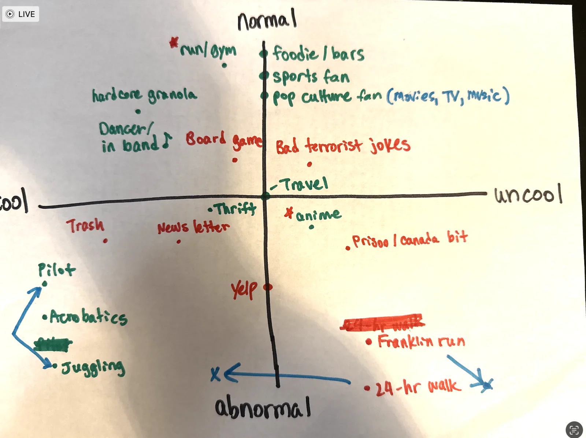
And trying to fit other types of activities into the chart. People definitely had interesting opinions on different activities and there was a lot of room for disagreement.
Afterwards, “The Fisherwoman,” “The Quant,” and “The Awepartment” went to get dinner at Marufuku. We did a deep dive on a bunch of dating advice for me with a bit of an emphasis on how I can come off as socially unadjusted and consequentially unfriendly. It’s interesting because I like to think of myself as a reasonably altruistic person which everyone agreed with so to see that disconnect is something I found a bit surprising. One easy bit of advice I got was to smile more, though I’m told that only works if I’m a smiler. Hmm am I a smiley person? Maybe Ill give it a try and see. I certainly want to be one but I wonder if I’m naturally typecast to not be. Of course looks also came up and I was told that my outfit today was certainly an improvement (shoutout again to “The Yogi”!), and looks do relate to how people perceive you so maybe that in turn will make people think I’m friendlier.
Probably the most interesting thing I was told though was that apparently some people said they didn’t really understand me that much but then reading the newsletter actually helped. While this wasn’t quite the angle I thought I am glad to hear that the newsletter gives people a better insight into me and I come off as less maligned.
I was also told that I still have to keep improving myself if I want to date women in SF but I could be more of a catch in other places where my having a good job and education make me stand out more. I don’t really want to move and admittedly it is a bit disheartening to hear that I still have a bunch of work to do but I guess I gotta do it. It’s a bit hard for me not to tie dating to self worth in some sense considering the last year has been a whole bunch of dating related self improvement stuff that has led me to view it as a reflection of myself and how well someone would like me.
Personal training progress for the week
The dot plots below show every exercise logged through 11/5/2026; later dates are excluded. The x-axis is time, the y-axis is logged weight, and dot size represents reps or logged time. Bodyweight sets appear on the BW baseline.


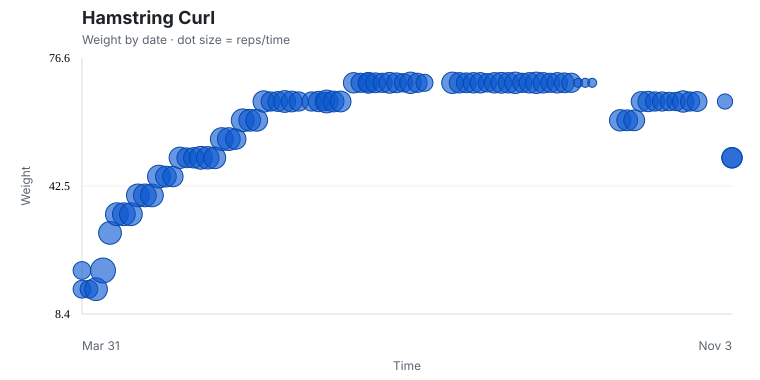
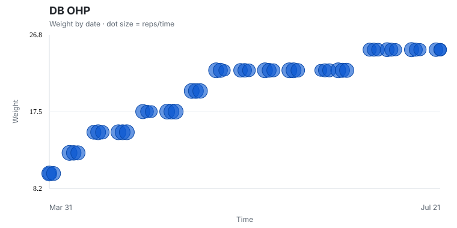
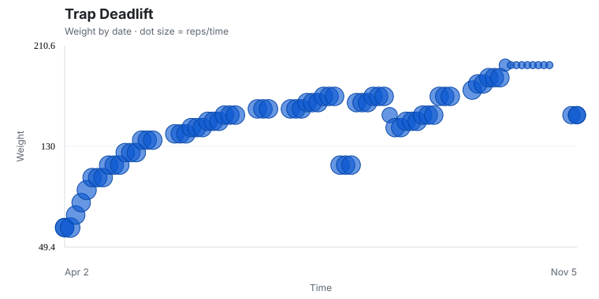


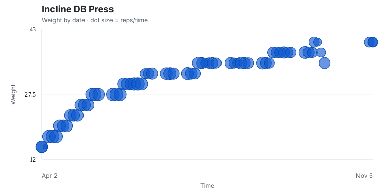
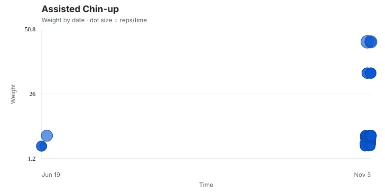
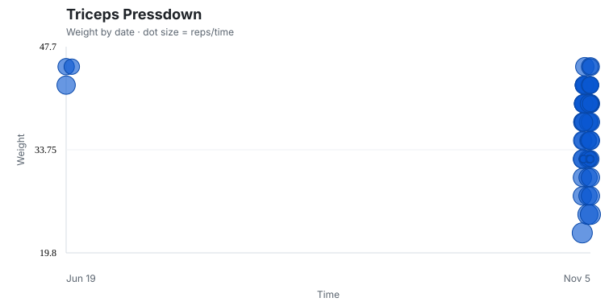
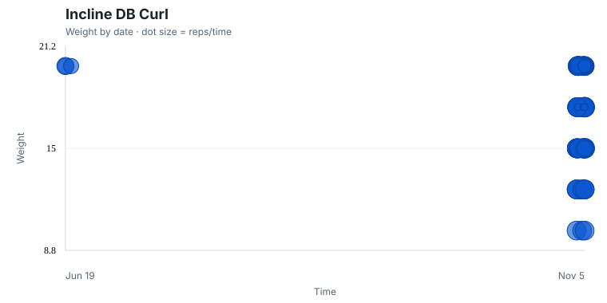
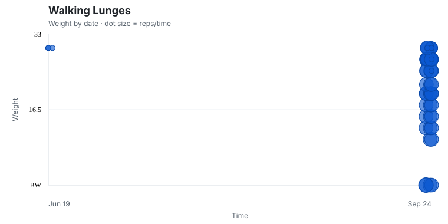
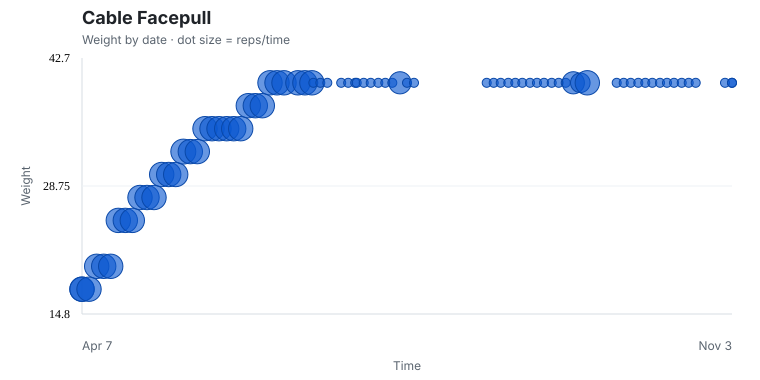
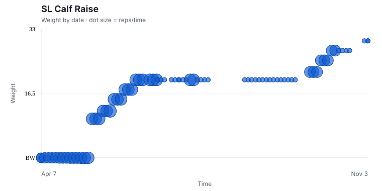
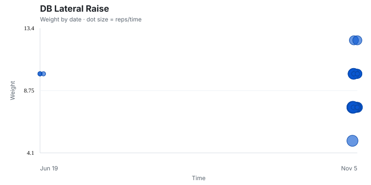


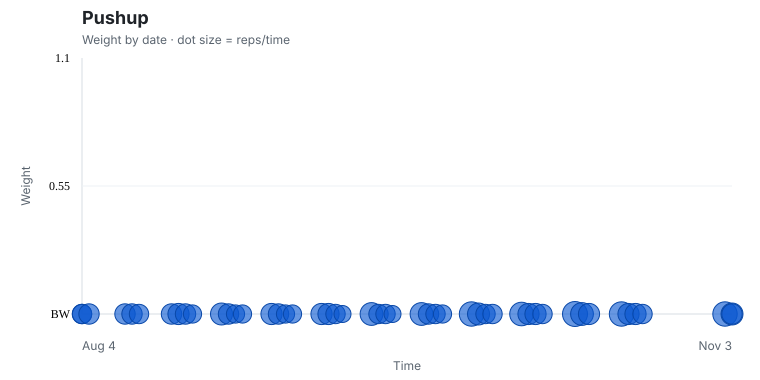
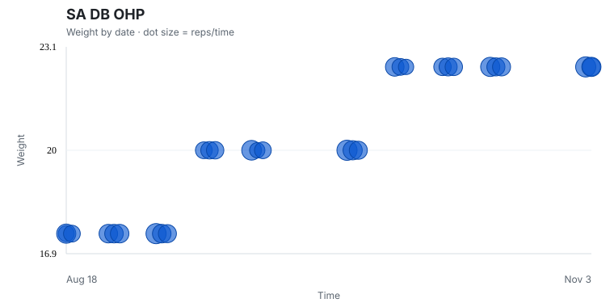

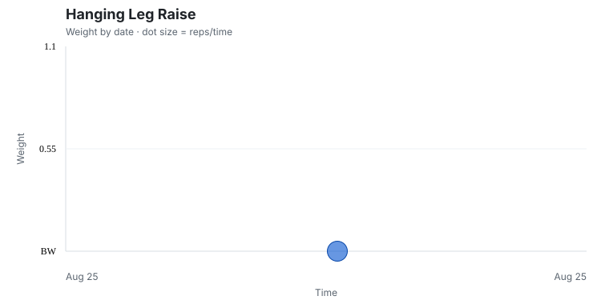
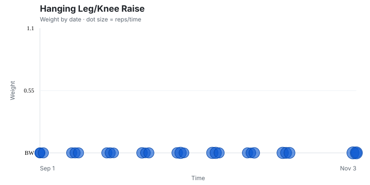
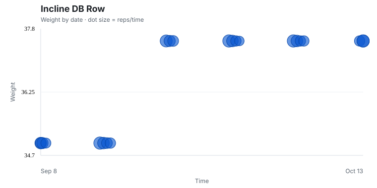
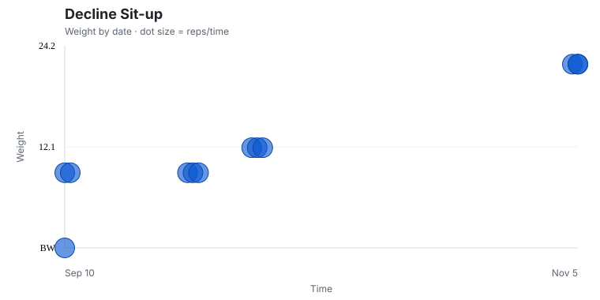
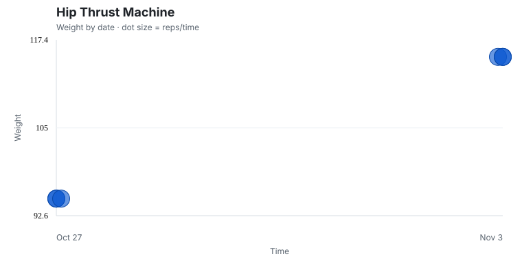
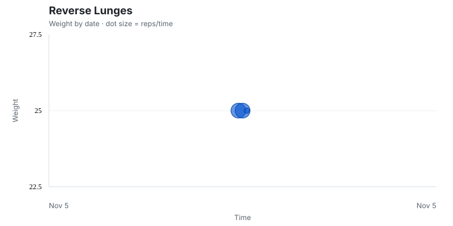